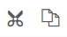
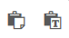
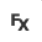
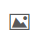
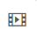
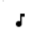

Retroalimentación
El editor de eXeLearning facilita la introducción de textos, efectos y elementos multimedia. Los efectos incluidos en el editor harán los contenidos más dinámicos.
Opciones:
Deshacer / Rehacer: nos permite deshacer (Ctrl + Z) o rehacer (Ctrl + Y) el último cambio realizado.
 Cortar / Copiar: cortar nos permite cortar (Ctrl + X) el texto seleccionado (que desaparece) para posteriormente pegarlo. La opción de copiar nos permitirá copiar el texto seleccionado en el portapapeles.
 Pegar / Pegar texto sin formato: nos permite pegar texto copiado en la web o en un documento de texto. Desde al versión 2.6 está activada la opción Pegar sin formato.
Embeber código: permite embeber código HTML (saber más).
Código como texto: útil para pegar código como texto. También permite resaltar automáticamente la sintaxis de diferentes lenguajes de programación (saber más).
Marcado matemático: nos permite introducir fórmulas en LATEX. En este sitio web de Juan José de Haro podemos ver cómo exportar las fórmulas de LibreOffice para poder reutilizarlas en eXeLearning.
Bocadillos: nos permite introducir bocadillos o tooltips (saber más).
Ventana de diálogo: nos da la opción de introducir una ventana con información adicional
 Efectos: nos permite crear varios efectos en nuestros contenidos: acordeón, pestañas, paginación, carrusel, línea de tiempo.
 Insertar / editar imagen: facilita la inserción de imágenes (saber más).
 Insertar / editar medio embebido: permite la inclusión de elementos multimedia, vídeos, audios, Youtube... (saber más).
Mapa mental: permite crear un mapa mental o mapa conceptual (saber más).
Grabadora: permite grabar e incluir directamente audios en el iDevice (saber más).
 Notación musical ABC: introduce notación musical en formato ABC y visualiza la partitura generada. También permite escuchar el audio en un reproductor MIDI.
Editar código fuente HTML: editor avanzado de código HTML (saber más).
Pantalla completa: nos permite visualizar el contenido que estamos editando a tamaño de pantalla completa.
Un tooltip (también llamada descripción emergente) es una herramienta de ayuda visual, que funciona al situar el cursor sobre algún elemento gráfico, mostrando una ayuda adicional para informar al usuario de la finalidad del elemento sobre el que se encuentra.
Ejemplo de ventana de diálogo